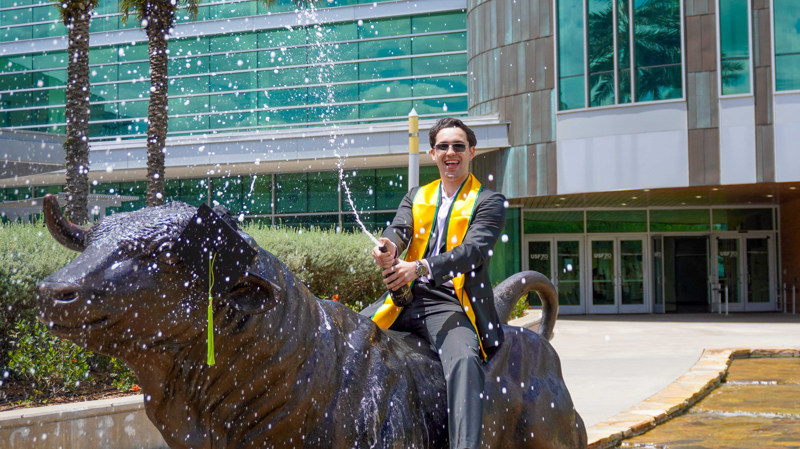

The Experience
Dedicated to capturing the special moments you can treasure forever.
Green & Gold Expertise
Navigating the best backdrops of the University of South Florida. From the timeless greenery and reflection of MLK Plaza to the essential milestone shots right on the USF Bull statues, I know exactly where the light hits best on campus to make your achievements stand out.
Warm, Vibrant & Dreamy
Your achievements deserve to be captured in their best light. My signature shooting and editing style focuses on creating warm, vibrant images with a soft, slightly dreamy aesthetic—making your graduation gallery feel as magical as the milestone itself.
Dynamic Posing Direction
Not knowing how to pose? Don't worry, I completely have you covered. I provide clear, fun, and natural movement prompts—guiding you through everything from cap tosses to walking steps—so you can stay relaxed and let your genuine joy shine through.
Solo or With the Squad
Whether you want a deeply personal solo session to honor your hard work, or a high-energy group shoot to celebrate making it to the finish line with your best friends, I specialize in both to ensure you walk away with portraits you'll treasure forever.